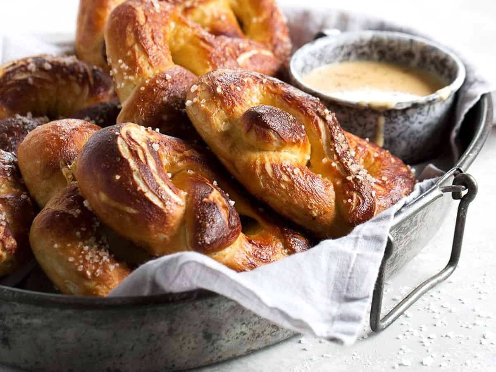

Pretzel with Beer Cheese Recipe

Recipe Description
Classic soft pretzels are easily made at home! Serve them with this easy and delicious Beer Cheese dip, for a great snack.
Ingredients
- Yeast
- Kosher Salt
- Flower
- Baking Soda
- Butter
- Beer
- Cheese
- Dry Mustard
Baking Instructions
- To make the pretzel dough: In a large bowl or the bowl of a stand mixer fitted with a kneading hook, combine the water, sugar and yeast. Let stand 5 minutes. Add the salt, butter and about 3 cups of the flour. Mix on low speed until well combined. Add one more cup of flour and mix to combine. Begin adding last 1 1/2 cups, a bit at a time, until you have a soft, moist dough that pulls away from the side of the bowl. Allow to knead for 4-5 minutes. *You may not need to use all the flour if dough reaches that stage with less flour. You may need to add a bit more if dough is still sticky when you have added it all.
- Remove the dough to a greased bowl, cover with plastic wrap and let rise until doubled, about 50-60 minutes.
- Preheat the oven to 450F. Line a large baking sheet with parchment paper and set aside.
- In a large pot, bring the 10 cups of water and the baking soda to a rolling boil.
- BWhen dough has doubled, turn out onto a lightly floured work surface and divide into 8 equal pieces. Form into a ball and let stand 5-10 minutes, covered with a clean tea towel.
- Starting with just 4 of the balls of dough, roll each into a 24-inch rope. Make a U-shape with the rope, holding the ends of the rope, cross them over each other and press onto the bottom of the U in order to form the shape of a pretzel. Place onto the parchment-lined half sheet pan.
- Place the pretzels into the boiling water, 2 at a time, for 30 seconds. Remove them from the water using a large flat spatula. Return to the half sheet pan, brush the top of each pretzel with the beaten egg yolk and water mixture and sprinkle with the kosher salt. Bake until dark golden brown in color, approximately 12 to 14 minutes. Transfer to a cooling rack.
- While the first 4 pretzels are baking, shape and boil the last 4 pretzels and place on a sheet of parchment paper. Brush with egg yolk and sprinkle with salt. When the first batch comes out of the oven, slide the last 4 on the parchment paper onto the baking sheet. Bake 12-14 minutes, or until deep golden.
- To make the beer cheese: In a medium saucepan, melt the butter over medium heat. Add the flour and cook, stirring constantly, for about 1 minutes. Slowly add the beer and stir well until smooth. Add the milk, mustard, Worcestershire, garlic powder, salt, pepper and cayenne. Cook, stirring, until mixture thickens. Remove from heat. Stir in grated cheese, then let stand 1 minute. Stir again, until all the cheese is melted into the sauce. Taste the sauce and add more salt, pepper and/or mustard as needed. Enjoy warm with pretzels. *Can be made ahead and refrigerated up to 3 days.